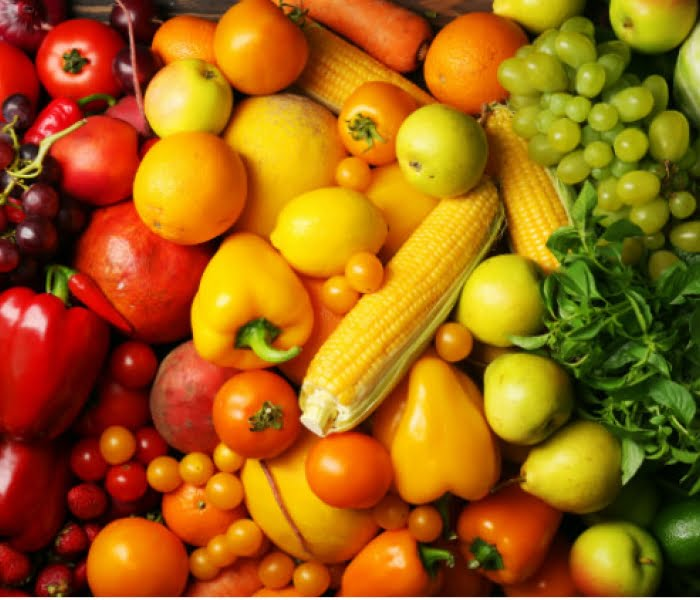
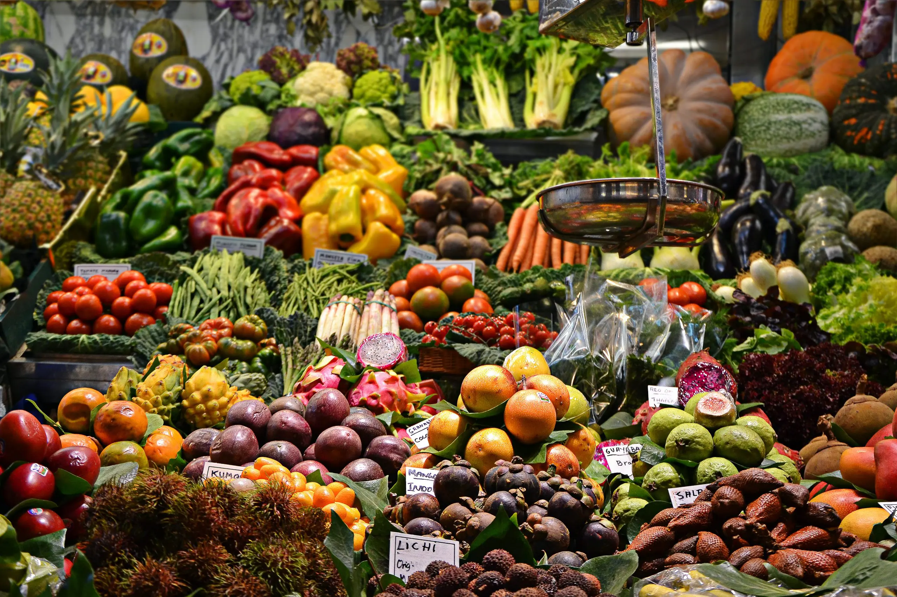

Conhecendo os alimentos: do natural aos industrializados
Alimentos in natura são aqueles obtidos diretamente de plantas ou animais e consumidos sem passar por nenhum tipo de alteração industrial. Eles preservam os nutrientes originais, têm alta densidade nutricional e são a base de uma alimentação saudável e equilibrada.

